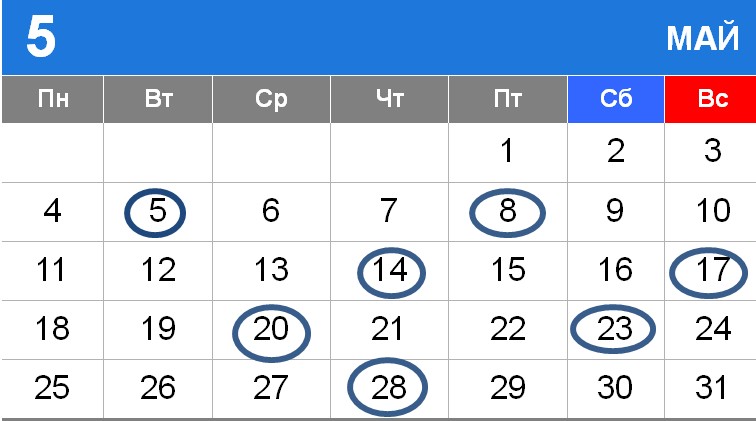
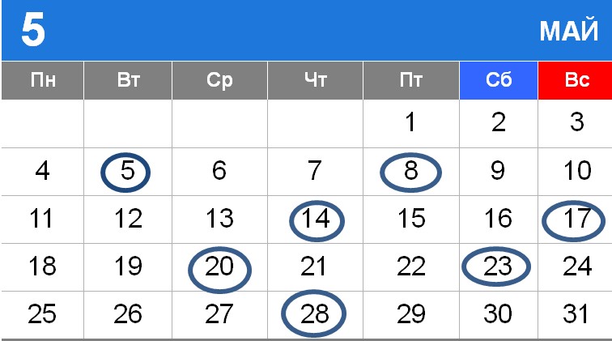
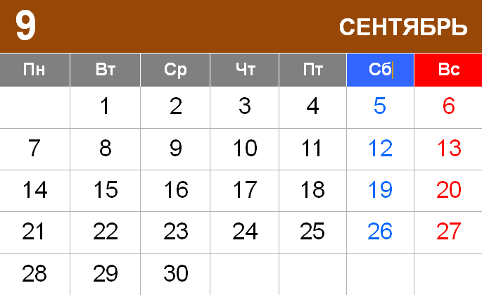
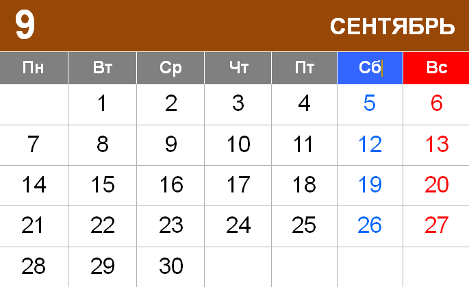

Автотранспортная компания Bussline - лучший и надёжный перевозчик, для путешествия в Санкт-Петербург с Киева и Чернигова .
Информация про рейс Киев - Санкт-Петербург
Отправление:
Прибытие:
Рaсписание автобусов
Киев — Санкт-Петербург
 

 

Стоимость билетов Киев — Санкт-Петербург: 1 200 грн / 1 800 руб.
Компания Bussline предоставляет вам комфортные условия, которые сделают ваш проезд Киев — Санкт-Петербург максимально удобной для вас. В наших автобусах, есть климат контроль (кондиционер), бесплатный Wi-Fi , у вас будут индивидуальные мониторы в спинках сидений, индивидуальные столики в спинках сидений, розетки 220В на каждую пару сидений, где вы можете с комфортом зарядить свой мобильный телефон.
Во время поездки наша компания предлагает чай/кофе и различные снеки. На борту наших автобусов работают профессиональные водители, а также стюардесса которая будет вас сопровождать от точки А до точки Б.